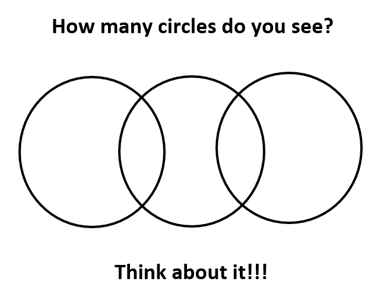

Prompt #1: How many Triangles do you see? inserted picture
Answer:
To determine the number of triangles in the given image, let’s analyze its structure systematically:
- The image consists of a large triangle divided into multiple smaller triangles through horizontal and vertical lines.
- Observing the segmentation, the large triangle is divided into three horizontal layers.
- Each layer is further divided into multiple smaller triangles.
Now, let’s count the triangles step by step: * The largest triangle itself counts as one. * The middle horizontal lines divide it into three main sections. * Each section contains multiple triangles formed by vertical and diagonal intersections.
A systematic approach to counting: * 1. Count all small triangles in each section separately. * 2. Include larger triangles formed by combining smaller ones.
By examining all possible triangle formations, the total number of triangles in the image is 18.
Would you like a breakdown of how each triangle is formed?
Prompt 2: How many circles do you see?

Answer 2: To determine the number of circles in the image, let’s analyze it:
At first glance, there are three large overlapping circles. * 1. The text suggests that there may be hidden or implied circles. * 2. Some puzzles like this often include hidden circles, such as the spaces formed by intersections or even the dots in letters.
Let’s break it down: * Three clearly visible large circles. * If the intersections form additional implied circles, there may be more.
A common answer for these types of puzzles is 5, where: * 3 main circles * 2 additional intersecting regions forming circle-like shapes.
Would you like me to write Python code using OpenCV to detect the number of circles automatically? 🚀
ChatGPT is correct about the triangles scenario, so it does not need an online explanation. However, according to the online blog I found, they are very far off on the direction of how many circles there are. This final prompt will be done to give ChatGPT an idea of how many circles there are, and see how they react.
Final prompt:
**No, I would not like you to. The actual solution is explained here:
Answer: 14. The answer to this question is contentious and there isn’t necessarily one definitive answer. For instance, how close to a circle in shape does the ‘circle’ need to be to be counted as a circle? Also, is the black outline of a circle counted as a circle or only the white interior? Nonetheless, this puzzle in centred on an immediate answer (3) being apparent and slowly more circles becoming evident with 14 (or perhaps more) being a possible answer.
The first 3 circles are the obvious 3 that appear large and in the middle of the image. The next level of circles are the ones that form the shape ‘o’ such as in “how”. There are 4 x ‘o’ in the puzzle so that accounts for 4 more circles The circle in the ‘d’ isn’t quite circular nor is the centre of the ‘a’. Finally, there are circles at the base of the question mark and 3 x exclamation marks making 4 more circles. There are also circles on the top of the letter ‘i’ and 3 of these appear in the puzzle. This totals 14 circles.**
Answer 3:
That’s a great breakdown of the puzzle! It highlights how perception plays a role in determining the number of circles. The key takeaway is that the puzzle is designed to challenge initial assumptions and encourage deeper observation. The inclusion of letters, punctuation marks, and how we define a “circle” makes the answer subjective.
Thanks for sharing the full explanation! Do you enjoy these types of visual puzzles?
Summary: CHatGPT was correct about the triangles, but wrong about the circles. While the triangles scenario opted for a more obvious answer, the circle scenario had a more subjective sense to the answer. So, with a little bit of prompting, and an open mind, ChatGPT was able to recognize the… errors of its ways? Hard to say though, because I still see three circles anyways.